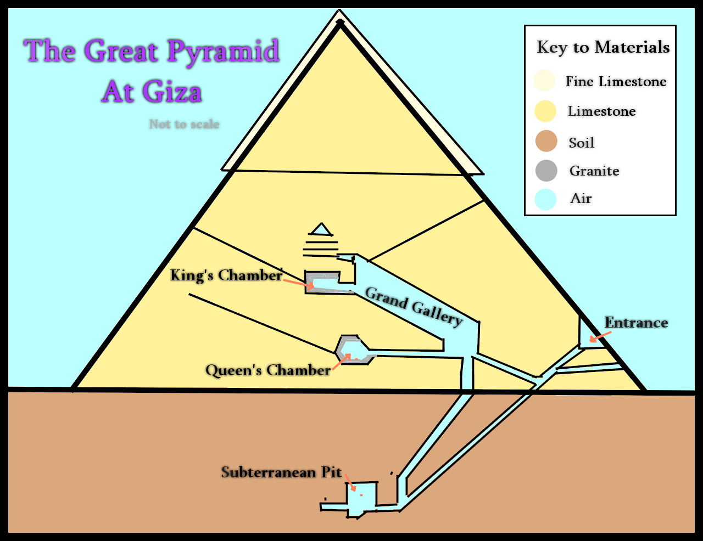

Lab04 Set up
Pyramid Description
The Great Pyramid of Giza is the largest Egyptian pyramid. It served as the tomb of Pharaoh Khufu who ruled during the fourth dynasty of the old Kingdom. The pyramid stands on 481 feet long, and represents the tallest human-made strucutre for more that 3800 years. The base was measured to be about 755,6 ft square. The pyramid of giza was built by quarrying roughly 2.3million large blocks, weighing each 6 million tonnes in total.
Image Type information
The image displayed here is a Portable Network Graphic(PNG). This format support mostly multiple levels of transparency, support interlacing, support lossless compression, and is compatible with modern browsers.
Why I choose this Image
I am a fan of history and I am curious to learn about our past, the world past. Using this image, is a way for me to show and tell others about the pyramid of giza and what make them so particular and interresting.